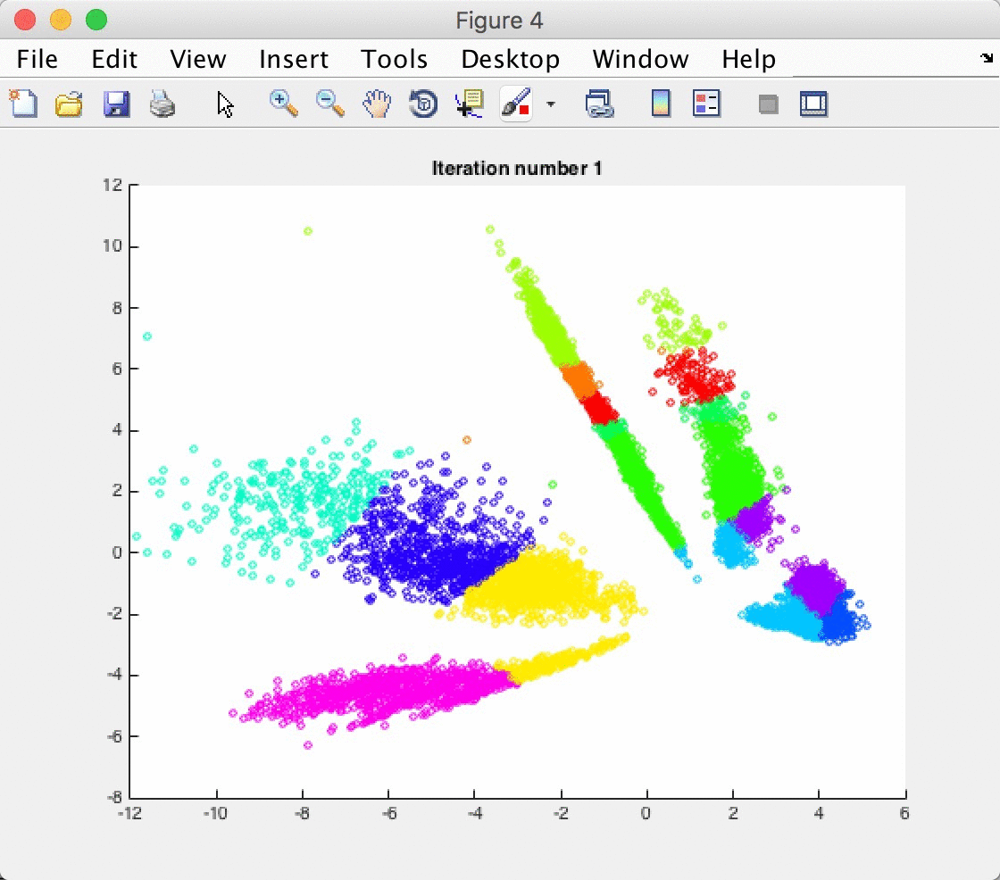
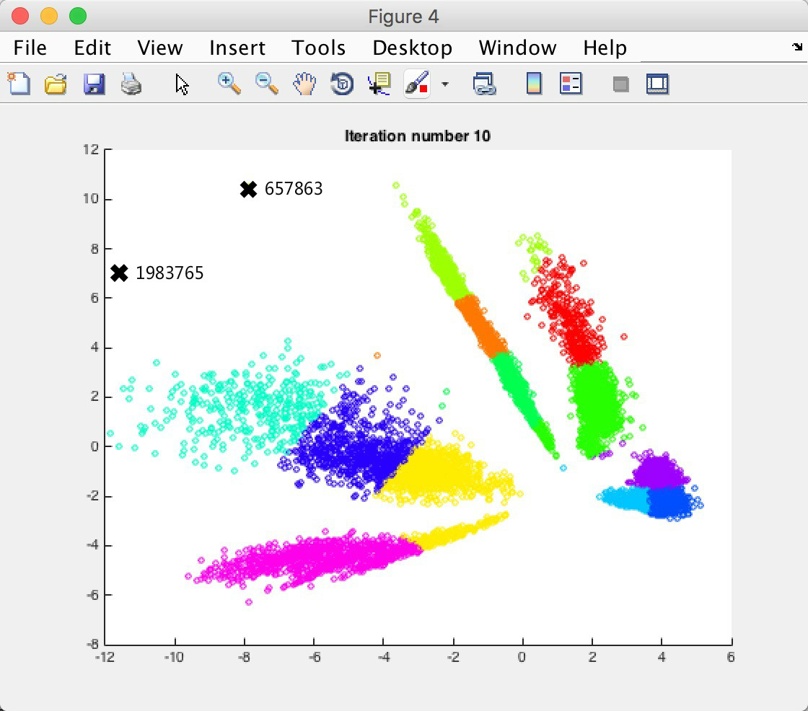

Lodging
PCA降维
 在分析得到了十多维的特征向量后，只有把特征点的维度降到两维或者三维才能进行可视化分析，来分析得到离群的奇怪的点。并接着对这些点进行分析。
在分析得到了十多维的特征向量后，只有把特征点的维度降到两维或者三维才能进行可视化分析，来分析得到离群的奇怪的点。并接着对这些点进行分析。
Kmeans 分类
 使用Kmeans的方法来对这些特征点进行分类，总共分成12类。Kmeans的步骤如下:
- 随机选取12个中心点作为分类的中点
- 将所有点根据他们离12个中心点的欧氏距离，将其分为离它们最近的类
- 根据每个类中的所有项的特征的平均值，重新选定12个中心点
- 不断重复2、3两步，直到所有中心点的分类情况趋于稳定
寻找异常点
 在得到分类后，可以在二维图中清楚地找到两个非常离群的点，它们的id是657863和1983765。我们会在后续中进一步分析这两个可疑id。